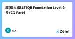
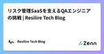

Zennの「QA」のフィード
フィード

超(個人)訳JSTQB Foundation Level シラバス Part5
Zennの「QA」のフィード
はじめに 今回はテスト活動に関するシラバスを読解していく。 引用元について テーマにある通り、ISTQBが提供するFoundation Levelシラバスを引用させて頂く。 1.4 テスト活動、テストウェア、そして役割 テストはコンテキスト次第である。しかし、ハイレベルでは、テスト目的を達成する確率を高くする、汎用的なテスト活動のセットというものが複数ある。これらテスト活動のセットがテストプロセスを構成する。テストプロセスは、多くの要因を考慮して特定の状況に対する適切な調整ができる。テストプロセスの中で、どのテスト活動を、どのように、いつ実施するかは、通常、特定の状況に対す...
1日前

テスト技法入門～ペアワイズ法～
Zennの「QA」のフィード
はじめに はじめまして！ Rehab for JAPAN QAエンジニアの山田です。 今後、QAエンジニアとして活動していく中での課題解決に向けた取り組やテスト技法など、 様々なことをブログを通して発信できればと思っています。 今回はテスト技法のご紹介として、組合せテスト技法の1つである 「ペアワイズ法」（オールペア法とも呼ばれている）についてご紹介させていただきます。 ターゲット 本記事のターゲットは以下です。 QAエンジニア歴1～2年目の方 テストケース数が膨大になってしまい、困っている方 テスト技法について学びたい方 ペアワイズ法とは ペアワイズ法（Pa...
5日前

【1200万MAU】基盤システム刷新プロジェクトのQA戦略と実践（後編） 1
1
Zennの「QA」のフィード
はじめに UbieでQAエンジニアをしているMayです。Ubieは「テクノロジーで人々を適切な医療に案内する」をミッションに、AI問診エンジンや医療プラットフォームを提供しています。 本記事では、toCサービスの基盤システム刷新プロジェクトにおけるQAプロセス、特にテスト戦略とリリース計画に焦点を当て、開発の裏側を紹介しています。 このリプレイスは、既存機能の維持と品質確保が最重要課題でした。そこで前編では、クロスファンクショナルなスクラムチームで、①リスクストーミングによるリスク可視化、②テストレベルと責務の定義による品質保証体制の構築、③段階的リリース計画とMVP開発による早期の...
6日前

超(個人)訳JSTQB Foundation Level シラバス Part4
Zennの「QA」のフィード
はじめに 前回はテストの目的とテストとデバッグの違いについて説明したが、今回は1.3 テストの原則の部分についてシラバス解釈を進めていく。 引用元について テーマにある通り、ISTQBが提供するFoundation Levelシラバスを引用させて頂く。 1.3 テストの原則 これまで長い間にわたり、さまざまなテストの原則が提唱され、あらゆるテストで適用できる一般的なガイドラインとなってきた。本シラバスでは、そのような 7 つの原則を示す このシラバスにはテストについての細かな知識は数多くあるが、原則と言われることもあり、これを覚えておくことで、テストを行うに当たっての状況...
9日前

【1200万MAU】基盤システム刷新プロジェクトのQA戦略と実践（前編） 1
Zennの「QA」のフィード
はじめに UbieでQAエンジニアをしているMayです。 Ubieは「テクノロジーで人々を適切な医療に案内する」をミッションに掲げ、医療機関向け、製薬企業向け、そして生活者向けに、AI問診エンジンや医療プラットフォームを提供しています。先日、月間1200万人を超えるユーザーが利用するtoCサービスを支える基盤システムについて、より拡張性の高いシステムへのリプレイスが完了しました。 2024年1月から新システムの開発に着手し、半年におよぶ概念設計を経て、8月からは実装フェーズに移行。度重なるリリース計画の見直しを乗り越え、2025年1月に無事リリースを迎えました。 本記事では、この長期...
12日前
マイベストでひとりQAエンジニアとして過ごした1年間を振り返る
Zennの「QA」のフィード
ごあいさつ こんにちは。マイベストでひとりQAをしているfukutomiです。 マイベストに入社して1年が経ちました。はやいものです。 今回はこの1年でやったことの振り返りと、これからについて書きたいと思います。 今の立ち位置 / これからやっていくこと 最初に今の立ち位置を説明させてください。 現在fukutomiはこの1月に新設されたプロダクト開発部 イネーブリングチームに所属しています。 立ち上げの経緯についてはこちらのブログをご参考にしていただければ。 https://zenn.dev/mybest_dev/articles/f6d72155356219 fukutomi...
12日前

リスク管理SaaSを支えるQAエンジニアの挑戦 | Resilire Tech Blog
Zennの「QA」のフィード
はじめに サプライチェーンリスク管理クラウドサービスResilire の@bbbar326です。 アーリーステージのスタートアップでは、スピード重視の開発が求められます。しかし、私たちResilireは「品質」もまた重要な価値だと考えています。今回は、品質管理に取り組む私たちの姿勢と、その中でQAエンジニアが果たす役割についてお話しさせていただきます。 Resilireとは Resilireは、サプライチェーンに関わる企業のリスク管理と事業継続計画（BCP）を支援するSaaSプラットフォームです。自然災害、サイバー攻撃、パンデミックなど、様々なリスクに対する事前準備から有事対応ま...
12日前

テストを自動化する#1｜Playwright/Javascriptのサンプルコード
Zennの「QA」のフィード
Playwrightでのテスト自動化に使えるJavascriptのコードです。 今回取り上げている内容 ! 要素の表示・非表示を確認したい bodyに特定のテキストが2つ存在することを確認したい 現在日時（年/月/日/時/分/秒）を取得して文字列にしたい（メソッド化） 要素の表示・非表示を確認したい HTMLで記述している場合、bodyに該当のテキストが表示されていることを確認します。 test.spec // 要素が表示されていることを確認 await expect(page.locator('body')).toContainText('テストテキスト'); //...
18日前
超(個人)訳JSTQB Foundation Level シラバス Part3
Zennの「QA」のフィード
はじめに 前回はテストの目的とテストとデバッグの違いについて説明したが、今回は1.2 なぜテストが必要か？の部分についてシラバス解釈を進めていく。 引用元について テーマにある通り、ISTQBが提供するFoundation Levelシラバスを引用させて頂く。 1.2 なぜテストが必要か？ テストをすることは品質コントロールの形式の 1 つであり、設定された範囲、時間、品質、予算の制約の中で、合意されたゴールを達成するために役立つ。成功に向けたテストによる貢献は、テストチーム の活動に限定されるべきではない。ステークホルダーであれば、誰でもプロジェクトを成功に近づける ため...
19日前
【8th長崎QDG】参加レポ
Zennの「QA」のフィード
初めに こちらの記事は2025年2月7日に行われた8th長崎QDGに同僚に誘われて参加してきたレポート(もしくはメモ)になります。 8th長崎QDGの概要 https://nagasaki-it-engineers.connpass.com/event/316177/ 開催日時・場所 日時: 2025年2月7日（金）10:00～18:30 会場: DEJIMAメッセ長崎（長崎市尾上町4-1）※オンサイト開催 主催・参加費 主催: 長崎IT技術者会 および 8th長崎QDG実行委員会 参加費: 一般 8,800円、学生 1,100円（※社会人学生は対象外） イベント概要 本イベント...
21日前
【Developers Summit 2025】スタートアップ1人目QAエンジニアがゼロからはじめた品質活動の軌跡と話しきれなかったこぼれ話
Zennの「QA」のフィード
はじめに こんにちは。令和トラベルのQAエンジニア 兼 エンジニアリングマネージャーの miisan です！ 2025年2月13日（木）にホテル雅叙園東京で開催された「Developers Summit（デブサミ）2025」にセッション登壇させていただきました！ 現地でセッションにご参加いただきました皆様、運営の皆様、ありがとうございました！ この記事では、セッション内では話しきれなかったことや、セッション後のAsk the Speakerでいただいた質問や過去さまざまな場面で質問されてきたような疑問に対してせっかくなので残しておきたいと思います。 「Developers Summi...
23日前
リリース前のE2E自動テストを簡略化したけど、案外品質に影響はなかったし開発者体験はよくなったよという話
Zennの「QA」のフィード
ごあいさつ こんにちは。マイベストでひとりQAをしているfukutomiです。 花粉症の季節がやってまいりました。つらいです。 いや、普段は薬で症状が出ないようにしているのでそれほどつらくはないのですが…。 いつか薬が効かなくなるんじゃないかという恐怖に怯えています。 さて、今回はリリース前のE2E自動テストを簡略化した話をします。 よろしくお願いします。 なぜやったのか もともとマイベストではリリース前のE2E自動テストでけっこう詳細なリグレッションテストを実行していました。 全記事種に対してさまざまな動作確認を行うので時間はかかりますが、自動テストのおかげで防がれた障害もあっ...
23日前
Developers Summit 2025 参加レポート（day1）（#devsumi）
Zennの「QA」のフィード
📝はじめに 2025年2月13日、14日の2日間で開催している Developers Summit 2025（#devsumi） の1日目に参加しました！ https://event.shoeisha.jp/devsumi/20250213 私が聴講したセッションでは、開発文化や品質向上、組織づくりなどのテーマが多かった気がします。 技術に閉じず、事業の目標やサービス全体を意識して開発する意識が欠かせないと改めて感じました。印象に残ったセッションを紹介します☀️ Architecture to Design：より良い設計を目指して スピーカー: 米久保 剛（電通総研） https...
24日前
開発における障害対応フローの運用をはじめた話
Zennの「QA」のフィード
ごあいさつ こんにちは。マイベストでひとりQAをしているfukutomiです。 早いものでマイベストに来て1年が経ちました。 …いや、早くないですか？ 30歳を超えてから月日が経過するのが加速度的に早くなっている気がします。 令和がもう7年目であることが信じられません。 さてさて、今回は障害対応フローを整備して運用を始めてみたよという話です。 障害、、、それはエンジニアとしては最も聞きたくない言葉のひとつだと思いますが、起こってしまったからにはちゃんと振り返って今後発生しないようにしなければなりません。 その過程をフローとして整備することで、過去の障害情報をしっかり蓄積するとともに、...
1ヶ月前
QAエンジニアで「生成AI活用もくもく会」をはじめてみた
Zennの「QA」のフィード
こんにちは、UbieでQAエンジニアをしているackeyです。 本記事では、弊社のQAエンジニア4名で始めた「生成AI活用もくもく会」の取り組みについて紹介します。 生成AIをもっと業務に取り入れたい方、チームでの生成AI活用を推進している方の参考になれば幸いです。 はじめに：なぜもくもく会をはじめたのか Ubieでは「生成AIネイティブ企業」を目標に掲げており、職種を問わずあらゆる業務で生成AI活用を推進しています。 https://x.com/masa_kazama/status/1887036853666083264 そのような背景もあり、QAエンジニア同士で、「生成AI時代の...
1ヶ月前
超(個人)訳JSTQB Foundation Level シラバス Part2
Zennの「QA」のフィード
はじめに 前回は「1.1 テストとは何か？」の中で、テストが我々の生活に与える影響や必要性について解説してきた。今回はテストを行う目的とテストとデバッグの違いを中心に解説していく。 引用元について ISTQBが提供するFoundation Levelシラバスを引用させて頂く。 1.1.1 テスト目的 典型的なテスト目的は以下の通り。 要件、ユーザーストーリー、設計、およびコードなどの作業成果物を評価する。 故障を引き起こし、欠陥を発見する。 求められるテスト対象のカバレッジを確保する。 ソフトウェア品質が不十分な場合のリスクレベルを下げる。 仕様化した要件が満たされている...
1ヶ月前
超(個人)訳JSTQB Foundation Level シラバス Part1
Zennの「QA」のフィード
はじめに 今回、JSTQB FLのシラバス読解に関する記事を書いていきます。 その経緯として、私自身2017年にFLを取得しましたが、資格取得してから「これ取ったはいいけど、どう仕事に活かせばいいの？」という疑問が浮んでおりました。 当時は「この先経験を積んでいく中で段々分かってくるか」と楽観視し、未来の自分に期待しておりましたが、現時点でもさほど分かっておりません。 このままではただ資格取得したという事実しか残らないため、改めてシラバスを読んで自分なりの発信したいと思い、記事にしようと決意しました。 引用元について テーマにある通り、ISTQBが提供するFoundation L...
1ヶ月前
IVECテスタークラス シラバス読解Part14
Zennの「QA」のフィード
はじめに 今回がIVECテスタークラス シラバス読解最終回です。 IoT関連は私にとっては未経験領域で少しとっつきづらい内容ですが、それでも読解していきます。 5. 専門テスト知識・スキル 5.2. IoT(Internet of Things)関連 IoT テスト環境の準備 IoTのシステム構成やテスト環境構築を理解する IoT のテストで準備すべき環境には以下のようなものが挙げられる。 ・物理デバイスのセットアップ ・利用環境を模倣したネットワークの環境準備 ・テストデータの生成 ・テストツールの使用方法 ・エビデンスの取得方法 テスト計画に基づいてデバイスやツール...
1ヶ月前
IVECテスタークラス シラバス読解 Part13
Zennの「QA」のフィード
はじめに 今回は前回の続きで、テスト自動化に関するシラバス読解を進めていく。 5. 専門テスト知識・スキル 5.1. テスト自動化 自動テストの実行 自動テスト実行前の準備・手順を実施 自動テストが正しく実行されるよう、以下の準備を行う。 ・環境の準備：必要なアプリケーションの起動や不必要なアプリケーションの停止、画面解像度の設 定、ネットワーク接続を確認する ・テストケースの準備と確認：テストの範囲や目的、内容を確認する ・テストデータの準備：必要なテストデータを配置する ・テスト結果の取得と保存の準備：保存場所の設定を確認する 手動テストにせよ、自動テストにせよ事...
1ヶ月前
明日から使える！偽陽性と本物の陽性を見極める方法【ソフトウェアテスト】
Zennの「QA」のフィード
こんにちは。QAエンジニアをしています、Kikuchiです。 今回は、偽陽性と本物の陽性（不具合）を見極める方法について詳しく解説します。 ソフトウェアテストに精通している方には初歩的な内容かとは思いますが、参考になることがありましたら幸いです。 概要 そもそもソフトウェアテストにおける偽陽性とは、「正常なプログラムを検証した際に、テストが失敗してしまう状態（想定したテスト結果が得られない状態）」 を指します。 偽陽性の例を挙げると... ログインができないと思ったら、アクセス権が付与されていなかった（ACLの制限） 一定時刻になってもメールが送信されないと思ったら、メール送信をO...
2ヶ月前